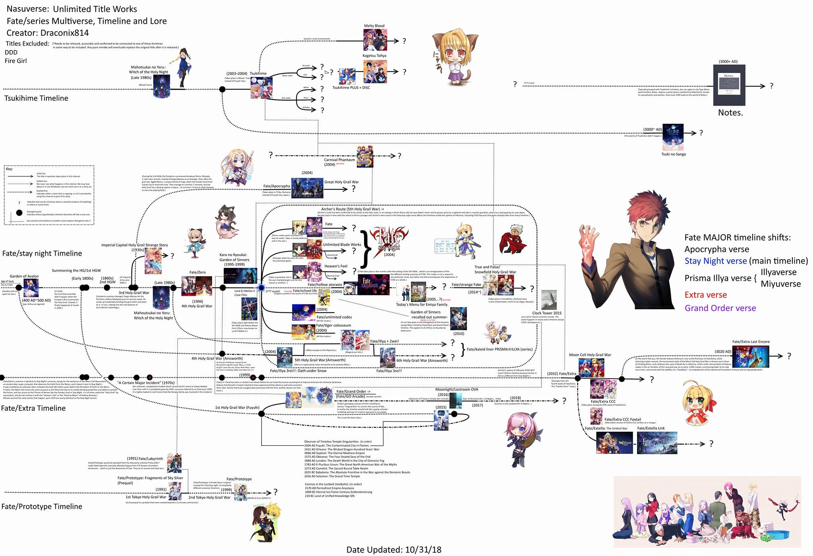

Fate Series Overview
The Fate Series is a multimedia franchise created by TYPE-MOON, which includes visual novels, anime, manga, and games. It revolves around the concept of the Holy Grail War, where mages summon heroic spirits to compete for the Holy Grail, a powerful artifact that can grant wishes.
Timeline Guide
Here a "Simple" Timeline Flow chart for beginners
Yeah Good luck with that
Anyway here are the "main storyline" kinda
- Fate/Zero (2011)(2 Seasons) Chronologically a prequel
- Fate/Stay Night: Unlimited Blade Works (2014)(2 Seasons) Rin Route
- Fate/Stay Night (2006)(1 Season) Saber Route
- Fate/stay night Movie: Heaven's Feel (2017)(3 Movies) Sakura Route
The Rest just watch whatever you wanted to watch